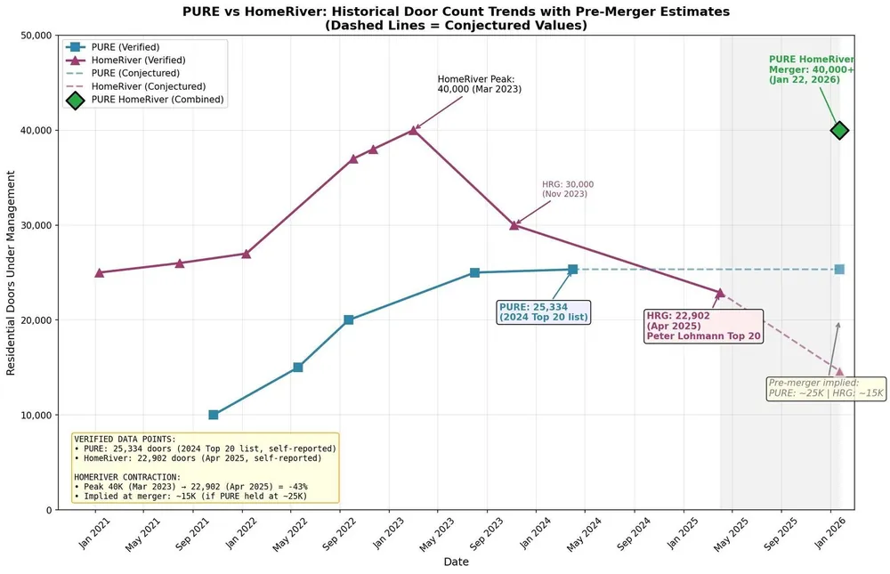

Earlier this year, two of the biggest names in single-family rental property management (PURE and HomeRiver Group) merged to form a new company called PURE HomeRiver.
The press release sounded impressive: 40,000 doors across 35 states. $80M in growth capital. Leadership roles filled by execs from both companies.
But when I saw that unit count, I paused.
Wait… only 40,000?
That felt low. I remembered seeing much higher numbers from both companies in past years, so I went digging. And what I found says a lot about the challenges of scaling property management beyond your local market.
The Unit Count Shrinkage (and Why It Matters)
Let’s rewind the tape:
In 2023, HomeRiver Group reported managing 48,000 units.
In early 2024, PURE had last self-reported 25,000 units.
Combined, you’d expect something in the ballpark of 70k doors.
Instead? Just 40,000. You can see the way it played out in this graph:

Even if we assume some conservative rounding or regional divestitures, that’s still a sizable drop. HomeRiver alone appears to have contracted by 43% between 2023 and 2025 - a huge shift for a company of that scale.
And this isn’t unique to them.
If you’ve played with my Unit Churn Visualizer, you know what’s lurking beneath the surface: churn at scale is relentless. The industry average is around 19.5% annually. At 40,000 doors, that means you have to add nearly 8,000 units a year just to break even.
Let’s say you’re active in 40 markets. That’s:
195 new doors per market per year
Or 16 new doors per month per market
Consistently hitting that number is a massive feat (and that’s just to stay flat).
My company added 187 new doors last year. Total. And I was thrilled with that number.
Scaling Across Markets? Brutally Hard.
I’ve been in this business long enough to know that growing a multi-market property management company isn’t just difficult… it’s borderline masochistic.
Okay, I’m joking. But the truth is, there are just so many systems that need to scale together: maintenance, leasing, trust accounting, vendor relationships, compliance, staffing. And every new market adds layers of complexity and regulatory risk.
To be clear: I’m rooting for the folks at PURE HomeRiver. There are smart, hardworking people involved in this merger, including many who still hold equity and are deeply invested in making this work.
But I’ve also thrown national expansion into my personal “Too-Hard Pile.”
We still have plenty of room to grow right here in Columbus. And I’d rather dominate my local market than spread thin chasing multi-state scale.
Cultural Fit and Legal History
One of the open questions with this merger is how the cultures of PURE and HomeRiver will blend.
From the outside, HRG always seemed like a steady, operator-friendly org. PURE, by contrast, has had a more aggressive legal posture post-acquisition. They’ve sued multiple PM companies they acquired (including 33rd Company and Anne McCawley) with some of those cases still ongoing.
That doesn’t necessarily mean the culture won’t mesh. But it’s worth noting that the new executive team is a mix from both organizations. Whether that balance creates harmony or friction remains to be seen.
Also worth noting: this was a straight merger. No cash exchanged hands. So if you sold to either company and are holding stock, this didn’t result in a liquidity event for you. Tough news for some, I’m sure.
As for the $80 million mentioned in the press release? It’s not equity - it’s debt.
Why This Merger Still Matters
Despite the headwinds, I still think this merger is important for the industry. If PURE HomeRiver figures out how to scale PM profitably at this level, it could:
Attract more capital into the space
Increase the valuation multiples for all of us
Spur innovation across software, operations, and vendor ecosystems
In other words: a rising tide lifts all boats. But we’ve seen this movie before. Just ask any of the roll-up attempts from the early 2010s.
The challenge isn’t access to capital… it’s finding a model that scales without turning into operational soup.
Final Thoughts
A few takeaways for operators like you and me:
Don’t assume big = better. Even the largest PM companies are struggling with churn and scale.
Growth math gets brutal past 1,000 units. Know your churn and plan accordingly.
Focus on what you can control (systems, profitability, retention) in your own market.
And if PURE HomeRiver does crack the code?
We’ll all benefit. Even if we never plan to grow past 500 doors.